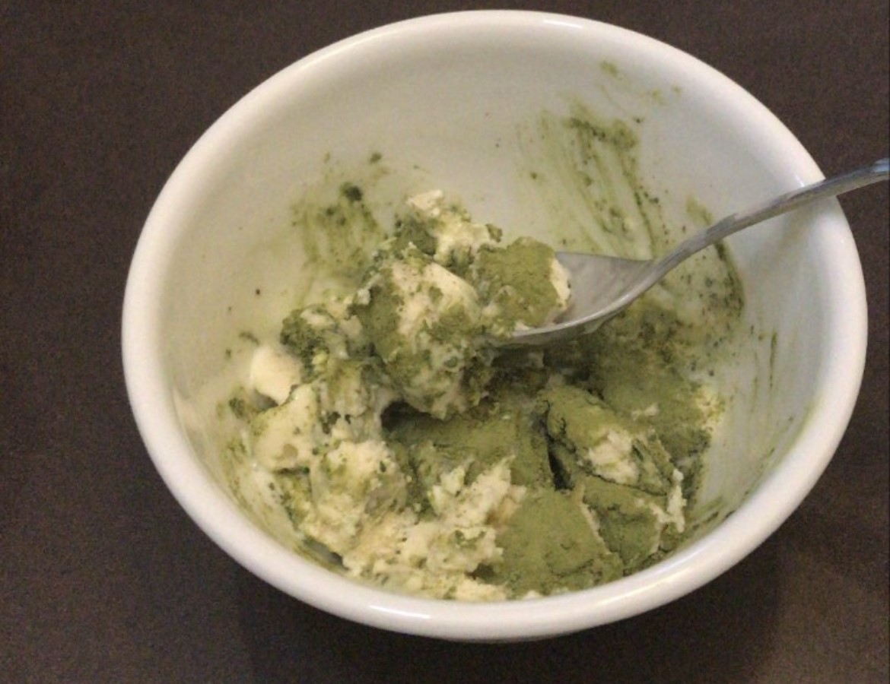

2 Second Matcha Ice Cream

This recipe is brought to you by yours truly. I am a well-known matcha fiend with a raging sweet tooth and little patience to get a hold of some matcha ice cream. It's my kryptonite. If this sounds like you too, then first of all I'm glad to see another crazed matcha lover; and second, so long as you have these ingredients, you'll be able to satiate that sweet matcha need in just two seconds.
- Matcha powder
- Vanilla ice cream
- Scoop desired amount of vanilla ice cream into a bowl.
- Scoop desired amount of matcha on top of the ice cream, based on the amount of ice cream you have scooped out. Everyone's ratio/matcha strength preference is different. Plus, you may want to consider whether or not you need to sleep tonight. As for me, I admit to adding several heaping teaspoons when I'm really craving that matcha flavor at the expense of a good night's rest.
- Start chowing down!! You could also mix it, making a slightly soupy ice cream at the sake of better distributed matcha. You could also throw the two into a blender and freeze until hardened again, but really, this was meant for the matcha fiends. Consuming immediately is supported!